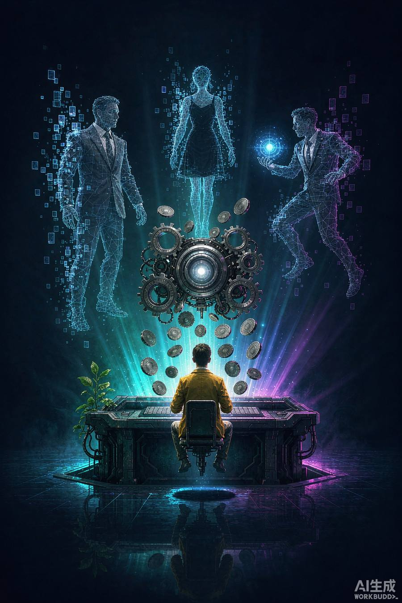
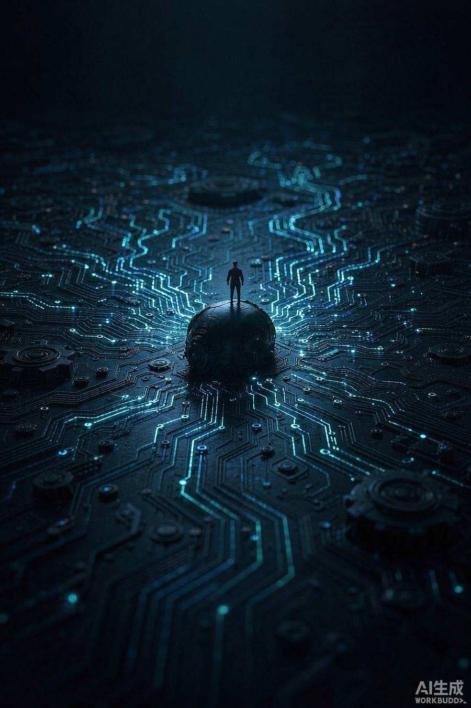
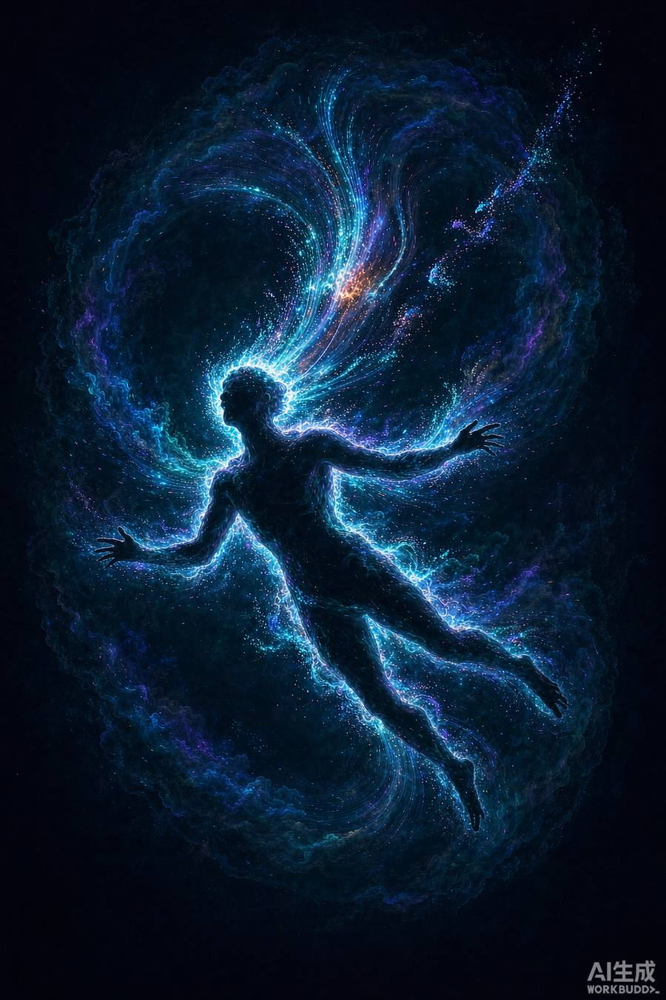

MULTIMODAL · CONCEPT DEMO
你的潜意识
长什么样
用摄像头和麦克风记录你三周，然后让 AI 把那些你自己都没意识到的判断，画给你看。
01
观察你
摄像头看视线与表情，麦克风听语气与停顿，全部在本机端处理。
02
读懂你
多模态模型从上万条数据里，找出你反复出现的判断模式。
03
生成你的世界
把结论变成一段视频：AI 按你的潜意识，渲染你的世界长什么样。
MULTIMODAL · CONCEPT DEMO
你的潜意识
长什么样
长什么样
用摄像头和麦克风记录你三周，然后让 AI 把那些你自己都没意识到的判断，画给你看。
01
观察你
摄像头看视线与表情，麦克风听语气与停顿。
02
读懂你
多模态模型找出你反复出现的判断模式。
03
生成你的世界
AI 按你的潜意识渲染你的世界。
开始观测我
认知
采集
画像
具象化
STEP 01 · 采集
正在观察你

30
FPS
1
人脸
186
语气 Hz
视线停留 · 3.2s
语气上升
微表情 · 抑制
21
观测天数
186
累计小时
4820
有效样本
采集维度
视线轨迹 · 面部微表情 · 语气与停顿 · 交互节奏
认知
采集
画像
具象化
STEP 02 · 画像
AI 看到了什么
基于 21 天 / 186 小时数据 · 置信度 0.87
功利性82
共情度41
控制感76
好奇心33
功利性视角
82
视线停留与对话起点的触发条件高度集中于「对方能提供什么」。
尺度错位
68
认知
采集
画像
具象化
STEP 03 · 具象化
你的潜意识世界
AI 依据你的画像生成的影像

SCENE 01 · 功能性社交
把他看成印钞机
在这个场景里，其他人不是人，是接口。他们身上唯一被读取的部分，是「能给出什么」。
0.0s固定广角：主体坐在中央，四周围绕着线框人形。
2.1s推近：人形开始齿轮化，硬币状光点汇入。
4.3s环绕：所有人形同步机械化，唯主体保持人形。

SCENE 02 · 尺度错位
把世界看成电路板
视点被拉到极高处。所有人都变成板上的微小节点，包括自己。
认知
采集
画像
具象化
技术实现 · 全链路均为当前已成熟技术
LAYER 01
采集层
端侧视觉模型（人脸框、微表情）与声学模型（语速、音高、停顿）在本机运行，原始画面与声音不出设备。
现成：MediaPipe / Whisper / 端侧 SDK
LAYER 02
推理层
多模态大模型对齐 21 天的行为序列，从「谁被注视多久」这类原始信号，推导到「功利性视角 82」这类人格结论。
现成：多模态 LLM 长序列推理
LAYER 03
生成层
文生视频模型按分镜脚本渲染。下图所有画面均由 AI 生成，无实拍、无素材库。
现成：文生视频模型（本 demo 素材即由其产出）
MOAT
真正的门槛在哪
技术不是门槛——采集、推理、生成三环都已成熟。门槛是心理学判读框架：如何把行为序列翻译成人格，且说出来让人信。
这是需要长期积累的部分
AI 生成素材 · 本 demo 的「潜意识世界」实拍
把他看成印钞机
他人被齿轮化，硬币汇入——功利性视角的视觉翻译
把人当蝼蚁
极小人形伫立于巨大电路板——尺度错位的视觉翻译

把自己当消耗单元
粒子从身体剥离上升汇入方体——消耗式节奏的视觉翻译

潜意识剖面
脑内不是大脑，是一座数据城市
文生视频 · SCENE 01 动态版
SUBSTRATE · 潜意识图谱 | 概念 Demo v1.0
小程序工程位于 miniprogram/，导入微信开发者工具即可运行
本页面所有画面与视频均由 AI 生成，人物数据为模拟样本